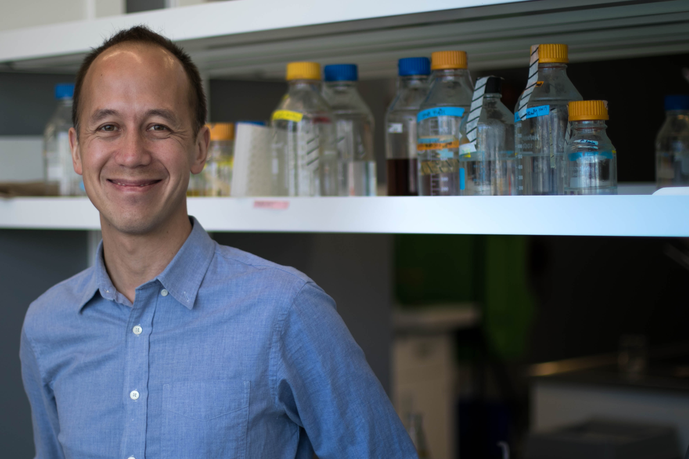
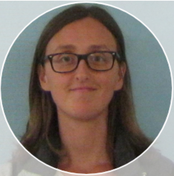

CUBE: Covid-19 in the Urban Built Environment
Developing environmental sampling as a method for monitoring SARS-CoV-2 in congregate settings
![CUBE Study Infographic:
[Panel 1] Setting: CUBE monitors Covid-19 in congregate settings such as long-term care homes, schools, and daycares. Study sites are tested on a weekly or biweekly basis.
[Panel 2] Sampling: We collect samples by swabbing a small area of the floor. We also measure the CO2 concentration of the air. Multiple samples are collected from each facility.
[Panel 3]: Testing: We use a PCR test to determine which samples contain Covid-19. We are also testing a CRISPR-based method and other approaches.](figures/CUBE_info6.png)
About the CUBE study
The Covid-19 in the Urban Built Environment (CUBE) project seeks to develop environmental sampling as a spatially-resolved method for monitoring Covid-19 in congregate settings such as long-term care homes (LTC), universities, public schools, and daycares.
We collect samples by swabbing floors; then, the swabs are tested for Covid-19 using an RT-qPCR assay developed by DNA Genotek and/or a novel CRISPR-based device.
Currently, we are focused on facilities located in Toronto, Ottawa, and Sault Ste. Marie.
Click here to read our preprint from an earlier study showing the effectiveness of environmental sampling for Covid-19 monitoring.
Frequently Asked Questions
We swab floors to pick up any SARS-CoV-2 RNA (the genetic material of the virus) that we can then detect using laboratory-based genetic methods. The aim of our study is to develop this technique as a means to monitor the presence of SARS-CoV-2 in congregate settings (e.g. schools, daycares, long-term care homes, workplaces, etc.).
Most facilities are swabbed on a weekly basis for a number of months.
The results will be made publicly available when the study is complete.
The current scientific consensus is that Covid-19 is mainly transmitted through aerosols. It is highly unlikely for an individual to become infected by Covid-19 directly from floors, but floors may have some viable virus present.
Our research team has members affliated with The Ottawa Hospital, Children’s Hospital of Eastern Ontario, Mt. Sinai Hospital, University of Ottawa, Carleton University, University of Toronto, University of Waterloo, and DNA Genotek.
The CUBE study has received funding from NSERC, The Ottawa Hospital Academic Medical Organization (TOHAMO), University of Ottawa, Carleton University, and DNA Genotek.
Study Locations
About the CUBE study
The Covid-19 in the Urban Built Environment (CUBE) project seeks to develop environmental sampling as a spatially-resolved method for monitoring Covid-19 in congregate settings such as long-term care homes (LTC), universities, public schools, and daycares.
We collect samples by swabbing floors; then, the swabs are tested for Covid-19 using an RT-qPCR assay developed by DNA Genotek and/or a novel CRISPR-based device.
Currently, we are focused on facilities located in Toronto, Ottawa, and Sault Ste. Marie.
Click here to read our preprint from an earlier study showing the effectiveness of environmental sampling for Covid-19 monitoring.
We swab floors to pick up any SARS-CoV-2 RNA (the genetic material of the virus) that we can then detect using laboratory-based genetic methods. The aim of our study is to develop this technique as a means to monitor the presence of SARS-CoV-2 in congregate settings (e.g. schools, daycares, long-term care homes, workplaces, etc.).
Most facilities are swabbed on a weekly basis for a number of months.
The results will be made publicly available when the study is complete.
The current scientific consensus is that Covid-19 is mainly transmitted through aerosols. It is highly unlikely for an individual to become infected by Covid-19 directly from floors, but floors may have some viable virus present.
Our research team has members affliated with The Ottawa Hospital, Children’s Hospital of Eastern Ontario, Mt. Sinai Hospital, University of Ottawa, Carleton University, University of Toronto, University of Waterloo, and DNA Genotek.
The CUBE study has received funding from NSERC, The Ottawa Hospital Academic Medical Organization (TOHAMO), University of Ottawa, Carleton University, and DNA Genotek.
Our research team is currently monitoring 12 facilities in Toronto, Ottawa, and Sault Ste. Marie, including 9 long-term care homes, 2 daycares, and 1 university.
CUBE @ Your Facility
To arrange for CUBE testing in your facility, please contact us by email .Contribute to CUBE
If you are interested in contributing to the CUBE research project, please contact us by email .
Research Team

Dr. Lucas Castellani
Dr. Castellani is an infectious diseases physician at the Sault Area Hospital and Assistant Professor at the Northern Ontario School of Medicine.

Evgueni Doukhanine
Molecular biologist at DNA Genotek specializing in microbiome research and development of chemical reagents and collection devices to facilitate stabilization of primary samples.

Dr. Michael Fralick
Mike is the Toronto Lead for CUBE, Assistant Professor at University of Toronto, Clinician Scientist at Sinai Health, and Locum general internist at The Sault Area Hospital.

Aaron Hinz
Aaron is a Research Associate at the University of Ottawa with interests in genetics and molecular mechanisms of microbial adaptation. For the CUBE project, he has been optimizing methods for SARS-CoV-2 detection from built environment samples.
Benazir Hodzic-Santor
Bena is a medical student at the University of Toronto and a research assistant in Dr. Fralick’s lab. She is currently assisting with on-site swabbing in the GTA.
Dr. Laura Hug
Assistant Professor and Canada Research Chair in Environmental Microbiology in the Department of Biology at the University of Waterloo. Dr. Hug’s research uses a combination of multi-omics and classical microbiological techniques to examine microbial diversity and function in contaminated sites.

Dr. Rees Kassen
Full Professor and Cystic Fibrosis Canada Researcher, University of Ottawa. Dr. Kassen uses microbes to study the evolution of biodiversity. Rees is also active at the interface between science, society, and policy, serving currently as Chair of the Science and Innovation Advisory Council at the Institute on Governance and a member of the World Economic Forum’s Global Future Council on Scientific Collaboration.

Dr. Derek MacFadden
Dr. MacFadden is a clinician scientist and epidemiologist at the Ottawa Hospital Research Institute.

Dr. Allison McGeer
Allison McGeer is an infectious diseases physician and microbiologist at Sinai Health System and Professor of Laboratory Medicine and Pathobiology at the University of Toronto.
Jason Moggridge
Research assistant for Dr. Michael Fralick. Jason is a data analyst and programmer for the CUBE study.

Dr. Caroline Nott
Infectious Diseases Physician and Director of the Antimicrobial Stewardship Program at The Ottawa Hospital (TOH). Dr. Nott has supported TOH Infection Prevention and Control and Occupational Health Departments as a COVID-19 Pandemic Support Lead since April 2020.
Ashley Raudanskis
Project Manager for the CUBE study. Ashley recently graduated from the University of Guelph and is focused on pursuing a career in healthcare in the near future.

Dr. Nisha Thampi
Medical director of the Infection Prevention and Control Program at CHEO, a pediatric health and research centre in Ottawa, and Associate Professor of Pediatrics at the University of Ottawa.

Tamara Van Bakel
Tamara is a Research Coordinator at Sinai Health System providing administrative support.
Dr. Alex Wong
Alex Wong is an associate professor of biology at Carleton University. His lab is optimizing methods for detecting SARS-CoV-2 in the built environment.